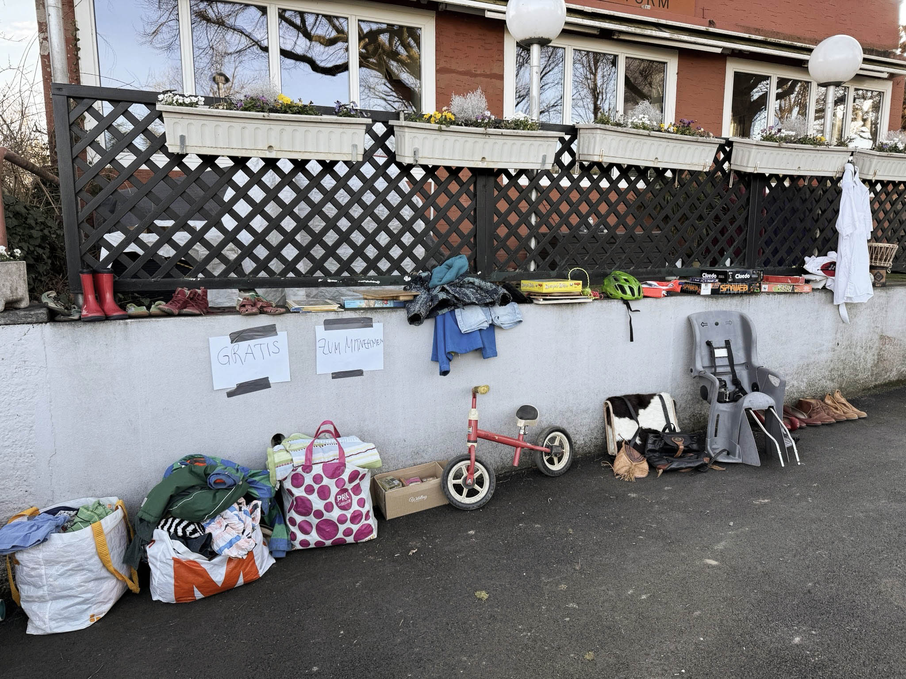
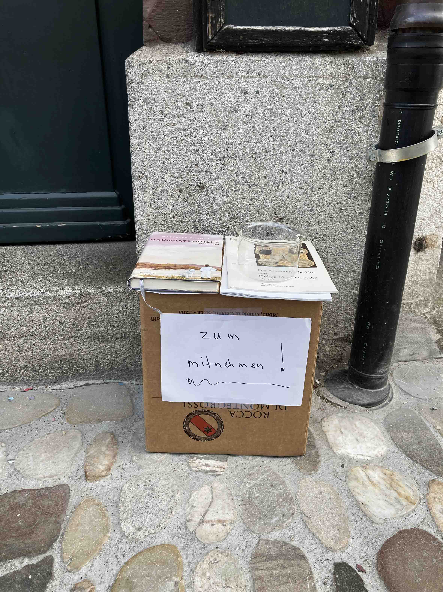
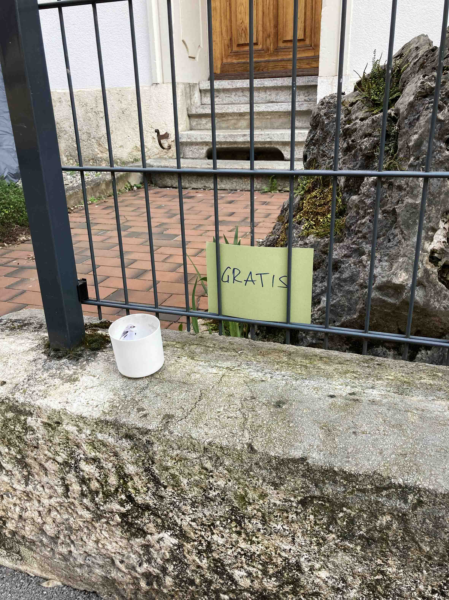
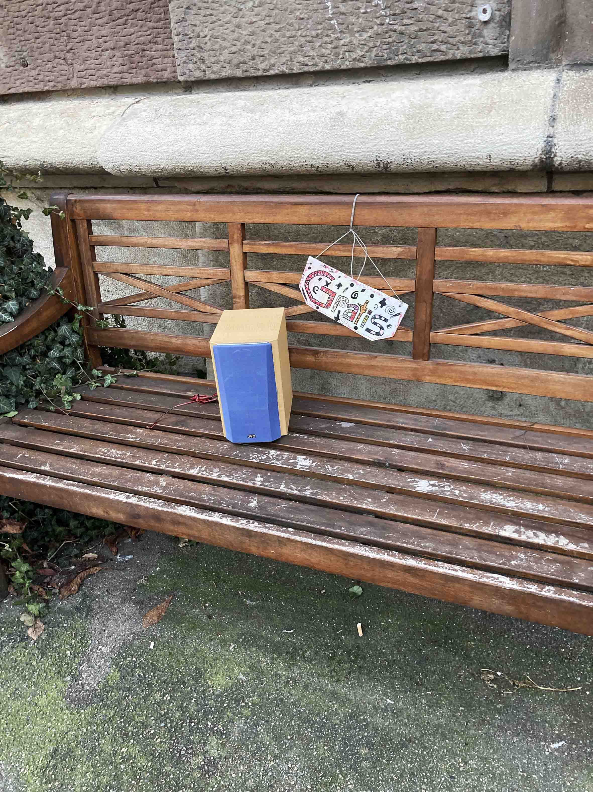
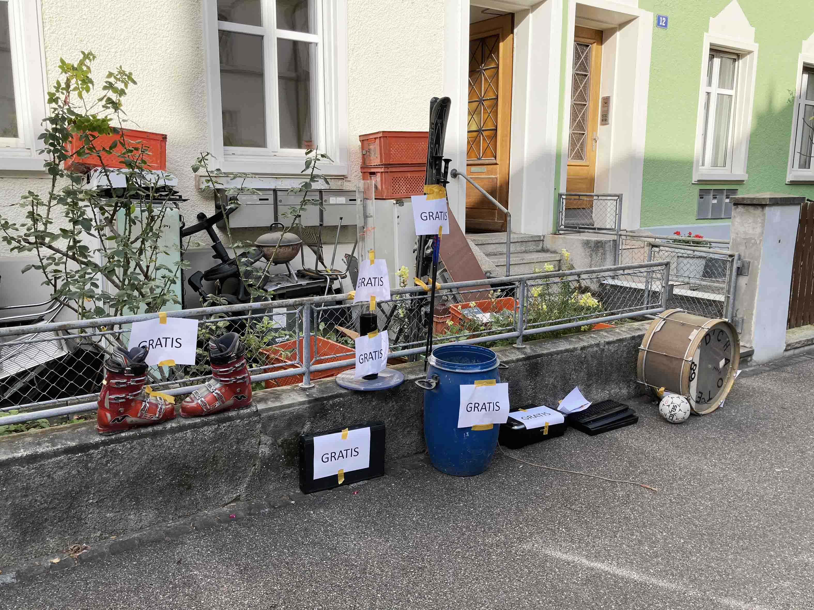
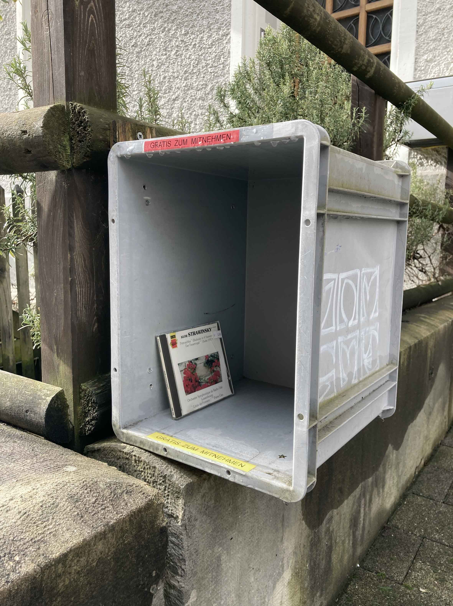
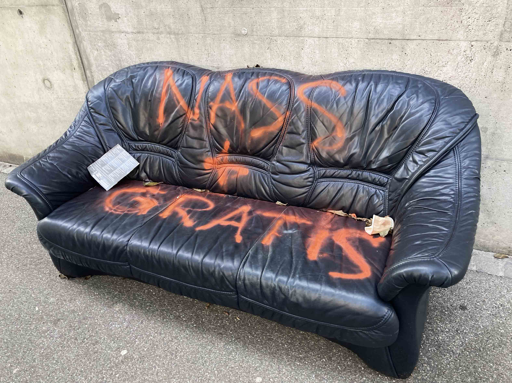
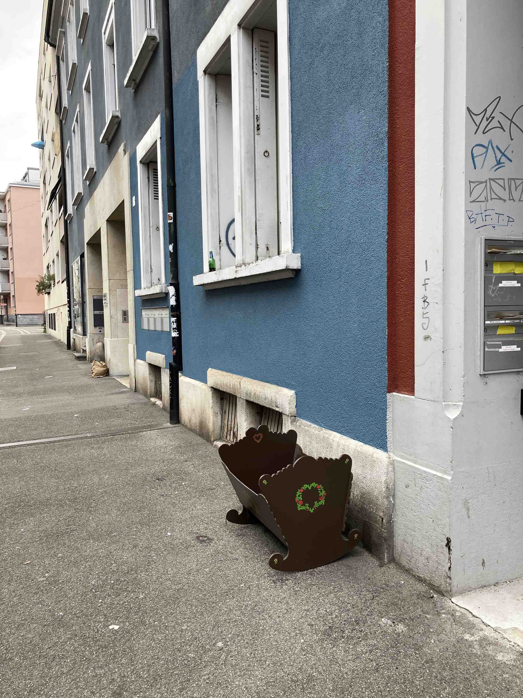

Abstract
This essay examines the widespread Swiss urban practice of placing unwanted objects on streets and thresholds with invitations to take them freely. Drawing on everyday walks through Basel and an approach described as “incidental ethnography,” it analyses the practice through eight interrelated perspectives: conceptual ambiguity, care, spatial liminality, informal codes, city-making, formalisation, public satire and everyday surrealism. The essay argues that carefully staged objects occupy an unstable position between gift and garbage, private possession and public good, legality and transgression. Boxes, labels and spatial thresholds temporarily reorganise value while enabling anonymous exchanges between residents who may never meet. These arrangements contribute to the appearance and use of urban space, generate fleeting forms of public discourse and produce accidental poetic constellations. The practice therefore constitutes a fragile, informal public realm sustained by care, interpretation and trust among strangers.
Keywords
Introduction
On the last step of a staircase in front of a multistorey city house, there is a shallow cardboard box containing a handful of neatly arranged books, a ceramic espresso cup and a small glass bowl filled with bracelets. Attached to the box is a note reading Gratis zum Mitnehmen – Free to take away. This phenomenon is ubiquitous in Swiss cities, particularly in the German-speaking part of the country. People have started offering board games, toys, electrical appliances, kitchen utensils and furniture in this way as a kind of urban custom. By placing these items close to the street, residents have created an unofficial barter economy of sorts, with its own set of rules.1
Everyday practices may seem small, gestural, and incidental. Yet closer inspection can reveal the nuances of meaning, informal dynamics, and the intricate texture of social life. Examining the ‘free to take away’ practice can challenge the apparent clarity of familiar terms, reveal an implicit ethics of care, and expose the interconnectedness of space, value, and everyday codes. The following pages show how this practice actively shapes the city’s appearance and public discourse, ranging from satirical comments to scenes of inadvertent surrealism. By analysing this phenomenon from eight different angles, I aim to unveil its multidimensional nature and its ability to transcend physical, legal, and disciplinary boundaries.
The following observations and impressions are based on everyday walks through Basel. In terms of methodology, the essay adopts what could be described as ‘incidental ethnography’. Rather than deliberately setting out to examine an urban practice, this approach relies on repeatedly stumbling upon it in the course of daily life. As the examples will demonstrate, everyday phenomena may find you first, provided you remain open to your surroundings and embrace what Georges Perec (2008) termed the ‘infra-ordinary’.

Useful ‘Trash’
Hypothesis 1: The practice reveals a conceptual grey area.
Generally, the number of objects placed on the streets and pavements is limited to a few ‘exhibits’. However, sometimes it feels as if an entire household has been turned inside out. Suddenly and unexpectedly, the guts of an affluent consumer society are laid bare. Those unfamiliar with the phenomenon are often surprised by the high quality of the items. “It’s not just trash like in Rome,” a friend from Italy once enthused. But is it?
Legally speaking, the case is clear: leaving an object on the street or pavement is considered illegal waste disposal and may result in a fine. However, this rigid approach is unsatisfactory as it contradicts our intuitive understanding of trash. According to Merriam-Webster, ‘trash’ and related terms are defined as “things that are no longer useful or wanted and that have been thrown away”. To their former owners, these items have indeed become useless. However, by placing them on the street in a particular way, they are suggesting that these items could be useful to someone else. The second part of the definition is equally ambiguous. Rather than being thrown away recklessly, these objects have been relocated and placed in a different context. The ‘free to take away’ culture demonstrates that disposing of things can be done in many different ways, challenging existing rules and common understandings.

Staging as Caring
Hypothesis 2: The intentional arrangement of objects is a form of care.
Advertising an item as ‘free’ suggests an intention to encourage people to take it. Aside from creating the label, people do not shy away from curating their offerings. They use boxes to contain or display their belongings. They arrange them thoughtfully to create an aesthetic impression. In this way, this form of advertising becomes an act of care, transcending its purely utilitarian meaning. Although the items are no longer useful to the former owners, they still seem to care about them, wishing them a new life in someone else’s hands. Indeed, the distinction between care and carelessness sheds light on the blurred boundary between gift and garbage. Through visible care for the object in question, the former owner attributes a purpose to it and gives it value. Conversely, a book thrown recklessly into a street corner devalues it and will not be regarded as desirable by passers-by. Yet this implicit ethics of care extends beyond respect for an unwanted object. It also applies to the stranger to whom the object is offered.

Thresholds and Transitions
Hypothesis 3: The item’s state of limbo is mirrored in its spatial liminality.
A crucial feature of the practice is its placement adjacent to, or directly on, a spatial threshold that usually indicates a boundary between the public and private spheres. Items to give away are often placed on low walls or steps leading to house entrances. This may be for legal as well as practical reasons: elevating the items makes them more accessible for pedestrians. In most cases, these surfaces are also cleaner, or at least expected to be more hygienic, than streets and pavements. Does proximity to, or direct contact with, street and pavement surfaces make the items appear less appealing and more like trash – and vice versa? Spatial thresholds and boxes act as pedestals, conferring a privileged status on the objects placed there.
In addition, these thresholds represent a liminal space, thereby reflecting the item’s own in-between status at that time. Until it is picked up, ownership and the attribution of value are suspended. Furthermore, an item’s placement on the private/public threshold suggests a transition from private belongings to public goods. Their proximity to ‘common ground’2 indicates their status as common goods. In their state of limbo, they resemble what Georg Simmel (2006, p. 312) termed öffentliches Nichteigentum, or ‘public non-property’.3 Thus, spatial and ontological uncertainty appear to complement each other.

Attraction and Confusion
Hypothesis 4: The message conveyed oscillates between redundancy and ambiguity.
The phenomenology of the labels is a story in itself. The same goes for the semantics of the phrase ‘free to take away’. Strictly speaking, the label is not necessary, as the practice also exists without it. The word gratis (free) provides clarity, but it also seems to stimulate our consumer instincts. It uses the logic of supermarket discounts to grab our attention and send our dopamine levels soaring. Curiously, the subsequent part, zum Mitnehmen (to take away), adds little new information semantically; rather, it reinforces the message, encouraging passers-by in an almost passive-aggressive way.
Often, the phrase is limited to one or the other. On other occasions, however, signs tend to be absent. As the practice has become a familiar feature of everyday urban life, people have learned to interpret the gesture without needing instructions. Yet the invisibility of signs leaves room for interpretation, which can lead to complications. For example: How can you tell whether the chair next to a house entrance has been deliberately abandoned or is being used to temporarily occupy the street? Is the kick scooter there to be given away, or will a child miss it? The more an item suits its context, the more difficult it gets to determine whether it is indeed free. Without explicit signage, the boundaries between participating in an informal barter exchange and inadvertently becoming a thief are fluid.

Co-Crafting the City
Hypothesis 5: By fostering exchange and collaborative design, the practice actively shapes the city.
Although not strictly transactional, the ‘free to take away’ culture implies a kind of exchange. Person A leaves an item that person B can take away, and in doing so releases person A from the duty to dispose of the unwanted object officially. More importantly, by taking the item, person B confirms person A’s belief that the object still has value. Therefore, ‘free’ does not mean ‘without anything in return’, but rather implies a kind of barter. In The Gift, Marcel Mauss (1966) demonstrated that the act of giving is intertwined with reciprocity and social recognition, rather than merely involving the exchange of objects. However, whereas Mauss analysed gift-giving as a means of establishing and maintaining social connections, the ‘free to take away’ practice usually involves anonymous parties.4
This affects the phenomenology of the ‘free to take away’ practice. It combines the anonymity of browsing online shops with the tangible displays of street vendors. Even without direct bilateral contact, these exchanges reveal design elements. To some extent, they transform the city into an informal bazaar. By providing an experience comprising scattered, highly individualised pop-up stalls, this practice alters how the city is perceived and used. In doing so, it reveals the agency and power of ordinary people, effectively performing everyday urbanism.5
Participating in anonymous bartering is an act of co-creation through which residents indirectly express an alternative to the status quo. By appropriating pavements and streets for their goods, and bending or rejecting existing regulations, they offer a glimpse into an alternative urban imaginary.

Evolution and Consolidation
Hypothesis 6: The practice evolves by creating mutations.
The fate of many informal, bottom-up practices is formalisation and/or commercialisation. In our case, the commercial equivalent, the flea market, actually predates the informal exchange. More recently, however, official initiatives have emerged to provide sites for the exchange of used goods. For example, abandoned telephone booths have been repurposed as places for book exchange. However, in rare cases, one can encounter evolved manifestations of the ‘free to take away’ practice, such as a creative resident attaching a container to their fence specifically for items ‘to take away’. The popular cardboard box has been replaced with a weatherproof plastic container that is firmly fixed in place. This demonstrates a process of consolidation. Nevertheless, it has retained liminal features, constituting a formalisation within the informal spectrum. As with the labels and messages, this practice changes and adapts – it is like a living organism.

Public Persiflage
Hypothesis 7: The practice stimulates public debate.
In order to avoid romanticising the phenomenon, I should point out that, despite the many caring manifestations of the ‘free to take away’ practice that have been discussed so far, people still leave broken, damaged or soiled items in the street. These items may be trash from the outset or become so through neglect. Perhaps the ultimate proof of care for an object left on the street is demonstrated by how those responsible consider weather conditions. A crude graffiti sprayed on an abandoned sofa reads: ‘Wet and for free’. It comments on the neglect and, at the same time, seems to mock the urban custom. Or is it seriously criticising it? Perhaps it is raising doubt about its legitimacy? Like political caricatures, this comment uses satire to expose a current event and instigate debate about the proper use of public space. Significantly, this debate is taking place in the realm of the unauthorised, with one clandestine practice commenting on another, thereby adding an additional layer of publicness to the existing media and political discourse.

Everyday Mystery
Hypothesis 8: People facilitate poetic constellations involuntarily.
One of the beauties of the ‘free to take away’ practice is that it can produce scenes of everyday surrealism. For example, an empty cradle on a deserted street can evoke an uncanny feeling similar to that experienced when viewing Giorgio de Chirico’s metaphysical paintings. Similarly, encountering a salad wrapped in plastic next to a red teacup ‘for free’ can evoke puzzlement, defying our need for logical explanations. The surrealists employed decontextualisation, inversion, and paradoxical juxtapositions to challenge the world’s superficial rationality and reveal its hidden mysteries. Unlike carefully composed paintings, however, the ‘free to take away’ phenomenon has the potential to create mysterious, uncanny or playful real-life situations by chance. As items placed on the street are usually associated with the domestic sphere, expectation and reality clash, creating momentary cognitive friction as the mind wavers between horror and beauty, perplexity and amazement. Previous owners and passers-by involuntarily take on the roles of artists and beholders, temporarily participating in the creation and appreciation of poetic connections and everyday mysteries.
The ‘free to take away’ practice demonstrates that even the slightest change to the ordinary can transform a familiar neighbourhood into a strange, eerie or whimsical place. This illustrates the close interconnection between physical everyday space, our mental perception of it and our general beliefs, or everyday mind.
Conclusion
In summary, this everyday urban practice inhabits a grey area, a liminal space. It oscillates between legitimacy and illegality, intention and chance, usefulness and aesthetics, gift and garbage. Rather than being fixed opposites, these categories form a spectrum. The status of an object shifts according to its spatial setting, the codes that frame it and the eyes that encounter it. Considered in this way, the practice can be seen as a form of bottom-up city-making, whether deliberate or not. It facilitates subtle communication among strangers who co-produce the streetscape without ever meeting. As such, it exemplifies core phenomena of everyday urban life: collective anonymity, subtle transgressions, and dynamic, temporary arrangements. Furthermore, the multidimensionality and ambiguity of this practice create space for the formation of poetic constellations, fleeting public discourse and small acts of care staged on the city’s thresholds. At the same time, this space constitutes an idiosyncratic public realm: neither private nor institutional, but a fragile social contract held together by boxes, signs and the trust of anonymous city dwellers.
References
Crawford, M. (1999) ‘Introduction’, in Chase, J.L., Crawford, M. and Kaliski, J. (eds) Everyday Urbanism. New York: Monacelli Press, pp. 8–15.
Mauss, M. (1966) The Gift: Forms and Functions of Exchange in Archaic Societies. Translated by I. Cunnison. London: Cohen & West.
Perec, G. (2008) ‘L’Infra-ordinaire’, in Species of Spaces and Other Pieces. Translated by J. Sturrock. London: Penguin Books, pp. 207–250.
Simmel, G. (2006) ‘Über räumliche Projektionen sozialer Formen [On the spatial projections of social forms]’, in Dünne, J. and Günzel, S. (eds) Raumtheorie: Grundlagentexte aus Philosophie und Kulturwissenschaften. Frankfurt am Main: Suhrkamp, pp. 304–315.
Notes
- This essay focuses on a specific practice in urban Switzerland. Comparable practices can be found elsewhere: abandoned furniture is common in public spaces in cities such as Paris and Rome, while labels are also used in Germany, where items are often marked zu verschenken (‘to give as a gift’) rather than Gratis zum Mitnehmen (‘free to take away’). In Aarhus and Copenhagen, I encountered high-quality items offered on pavements, but price tags and telephone numbers suggested commercial intent. In my observations, such examples tend to signal disposal more clearly, frame the object as a gift more explicitly, or reveal an intention to sell. The particular combination examined here – carefully staged, potentially valuable objects placed at the threshold between private and public space, sometimes accompanied by an invitation to take them – appears to be especially characteristic of the Swiss context. It is this constellation that produces the conceptual grey area explored in the essay. ↩
- In Switzerland, public spaces such as streets, pavements and squares are referred to as Allmend, which means ‘commons’. ↩
- Simmel uses the term in relation to the buffer zones of premodern border regions. ↩
- The only way Person B can learn about Person A is by deducing their interests and character from the object itself, its nature and quality, and the way it is presented, as well as from the building in front of which it was found. Person A, on the other hand, can only assume Person B’s taste in relation to the found object. ↩
- The shift of power from experts to ordinary people is a key feature of what Margaret Crawford termed ‘everyday urbanism’ (Crawford, 1999, p. 12). ↩
Author Bio
Patrick Düblin is an art historian and urban researcher whose work encompasses walking-based urban research, participatory spatial practice, and critical studies of the built environment. After studying art history and philosophy in Basel and Berlin, he completed a PhD in Architecture at ETH Zurich, focusing on performative and socially engaged spatial practices in the work of the Italian collective Stalker. In 2025, he founded the Office for Peripatetic Design, an informal agency offering public excursions into everyday urban spaces. He is currently developing a transdisciplinary programme on urban resilience at Bern University of Applied Sciences.
Recommended Citation
Düblin, P. (2026) ‘Gift or Garbage? Poetic Ambiguities of an Everyday Practice’, Everyday Life: International Journal of Public Culture, Art and Design, 1(1), pp. 1–14.
Article URL: https://articles.everydaylifejournal.uk/articles/practice-reviews/gift-or-garbage/
Copyright
© 2026 The Author(s). Published by Everyday Life: International Journal of Public Culture, Art and Design. This is an open-access article distributed under the terms of the Creative Commons Attribution-NonCommercial 4.0 International Licence (CC BY-NC 4.0), which permits non-commercial use, distribution and reproduction in any medium, provided the original work is properly cited. Everyday Life is an independent open-access journal with no submission or publication fees.